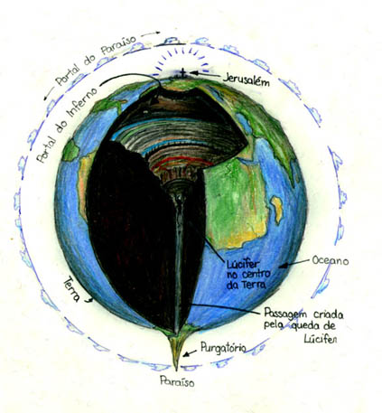

Canto XXXIV
Judeca - Lúcifer - Bruto - Cássio
Judas - Centro da Terra
- Estamos diante das bandeiras do rei do Inferno - disse-me Virgílio
-, olha pra frente e vê se consegues discerni-lo..
Comecei a ver, na distância, o que parecia ser um grande moinho, que
provocava aquelas rajadas de vento gelado. Estávamos chegando ao lugar
onde eram punidos aqueles que traíram os seus benfeitores. Neste lugar
sombrio e gelado, as almas estavam completamente submersas no gelo, transparecendo
como palha em cristal. Algumas estavam de pé, outras de ponta-cabeça,
outras atravessadas, outras em arco, outras curvadas e outras invertidas.
Quando já tínhamos caminhado o suficiente, o mestre decidiu me mostrar
aquele que um dia teve tão belo semblante:
- Esse é Dite - disse ele - e este
é o lugar que exige toda a coragem que tens em ti.
Não me perguntes, leitor, como eu fiquei fraco e gelado, pois não há
palavras que possam descrever aquela sensação. Eu não morri, nem estava
vivo. Tente imaginar, se puderes, como sem uma coisa nem outra eu fiquei.
Vi aquele gigante submerso no gelo, despontando seu corpo do peito para
cima. Só o seu braço tinha o tamanho de um daqueles gigantes que encontramos
na entrada do lago. Fiquei mais assombrado ainda quando vi que três caras
ele tinha na sua cabeça. Toda vermelha era a da frente. A da direita era
amarela e a da esquerda negra. Acompanhava cada uma, um par de asas como
as de morcego (eu nunca vi um navio com velas tão grandes). E ele as abanava,
produzindo três ventos delas resultantes. Era esse vento que congelava
as águas do Cócito. Ele chorava por seis olhos e dos três queixos caía
uma sangrenta baba que pingava junto com as lágrimas. Em cada boca ele
moía um pecador. O da frente ele mordia mais rapidamente que os outros.
Cada ceifada lhe arrancava a pele inteira.
- Esse da frente é Judas Iscariote
- disse-me o mestre - que sofre pena dobrada, com a cabeça para dentro
e as pernas para fora. O que é mordido pela boca preta é Bruto
e o outro é Cássio. Mas em breve será
noite. Está na hora de partirmos, pois já vimos tudo o que há para se
ver. Agora, agarre-se em mim firmemente.
Obedeci-o e ele me carregou, se dirigindo para as costas de Lúcifer.
Aguardou um pouco e quando as asas estavam altas, saltou da beira de um
fosso para a escuridão, mas logo agarrou-se às costas peludas do Demônio.
Descemos mais ainda. Estávamos entre as costas de Lúcifer e às crostas
congeladas do Cócito. Quando chegamos à altura da junção da coxa ao tronco
do gigante infernal, meu guia, já mostrando sinais de fadiga, inverteu
o corpo e, sem soltar os pelos do monstro, seguiu, como se subisse, me
fazendo pensar que voltávamos para o inferno.
- Segura firme - disse ele - pois não há outro caminho. Só por estas
escadas poderemos escapar de tanto mal.
E saímos por uma brecha na rocha. Virgílio, visivelmente exausto por
ter me carregado, me colocou numa beira para que eu me sentasse. Olhei
para cima procurando por Lúcifer mas não o achei. Encontrei-o lá embaixo
de pernas para o ar. Virgílio me confundiu ainda mais, falando:
- Levanta-te pois o caminho é longo. O dia já amanhece!
- Como amanhece? - perguntei-lhe - O tempo passou tão depressa assim?
Como já pode ser dia se agora há pouco começava a noite? E me esclareças
mais: onde está a geleira? E por que Lúcifer está de cabeça para baixo?
- Tu pensas que ainda estamos do outro lado. - disse-me o guia - Nós
passamos pelo centro da terra,
que puxa todo peso. Estamos agora embaixo do céu oposto, no hemisfério
de água. Sob teus pés está uma pequena esfera, cujo lado oposto é ocupada
pela Judeca. Se do outro lado anoitece,
aqui o dia nasce. Este buraco por onde passamos foi formado quando Dite
caiu do céu, e ele até hoje aí permanece. Depois da queda, por medo dele,
a terra que formava os continentes deste lado fugiu para o nosso céu deixando
encoberto pelo mar todo este hemisfério. A terra que estava aqui amontoou-se
na superfície onde formou uma montanha, deixando este caminho vazio. Aí
embaixo há um lugar, tão distante de Belzebú quanto o limite de sua tumba,
conhecido pelo som (e não pela vista) de um pequeno riacho que para cá
descende, pelo sulco que por ele foi aberto.
Passamos então o resto do dia seguindo por aquele caminho escondido debaixo
do chão, sem descanso algum. Depois da longa caminhada subimos, ele primeiro
e eu atrás, passando por uma pequena abertura na pedra, para enfim, rever
as estrelas.
|  |
| A Terra segundo a geografia de Dante. No hemisfério superior está Jerusalém e o mundo conhecido (século XIV). No hemisfério inferior há um grande oceano com uma única ilha no seu centro onde desponta uma montanha tão alta que alcança os céus. Ilustração de Helder da Rocha. |
Este é o fim da viagem pelo Inferno. A odisséia da Divina Comédia
continua... no Purgatório.
|